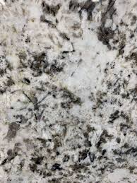

KT EXPORTS
Mobiles: +91 9828287159, +91 8003669110 | Emails: Ktirfan@yahoo.com, Ktjoher@gmail.com
GSTIN: 08ACEPI2786B1ZS
Registered Plant Office: Main Road Banswara-Dungarpur Highway, Bedwa, Partapur - 327024, Rajasthan, India
Technical Verification
✓ QC Verified Certificate

Verified structural batch layout reference.
| Compressive Strength | - |
| Water Absorption | - |
| Bulk Density | - |
| Compliance Rating | - |